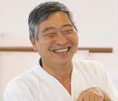

Cultura Japonesa
Artículos escritos por: Doshu Kenjiro Yoshigasaki

1.- Que es Zen?
Hay un gran malentendido acerca de lo que es el Zen. Es eivdente que nació en el Budismo y se desarrolló en China y luego fué a Japón. Sin embargo, el Zen se dearrolló en Japón en forma completamente diferente con respecto a su origen Indio o Chino, por eso el Zen Japonés no puede ser parte del Budismo. Incluso en cuanto al Budismo, es bien conocido que el Budismo Japonés es muy diferente al Budismo en otros países tales como Tibet, Vietnam, etc.
Lo más importante acerca del Zen es que no es meditación. Es una práctica física para tratar de lograr la habilidad de ver el propio cuerpo independientemente de la propia psiquis (sentimientos, pensamiento, deseo, emoción, etc). Entonces uno entenderá que el cuerpo puede decidir realizar una acción, sin decidir con un pensamiento. Este es el propósito del Zen y este entendimiento crea gran relajación y felicidad.
25 de marzo de 2020
Texto escrito por Doshu Kenjiro Yoshigasaki
Texto traducido por Sensei Norberto Kiman
2.- Por qué uno se sienta un largo tiempo en Zen?
Cuando uno se sienta por un largo tiempo, se vuelve muy doloroso mantener la postura. Uno necesita pensamientos o deseos para crear un cambio, pero no los necesita para mantener la misma postura. Por eso uno aprende a controlar el cuerpo sin pensamientos o sentimientos. De ese modo, uno puede ser capaz de ver el propio cuerpo independientemente de la psiquis de uno mismo.
25 de marzo de 2020
Texto escrito por Doshu Kenjiro Yoshigasaki
Texto traducido por Sensei Norberto Kiman
3.- Cómo ayuda la práctica del Zen a conseguir un cuerpo saludable ?
La medicina es una parte de la terapia y esta es la diferencia fundamental entre Zen y entrenamiento de Ki. La primera diferencia es la objetividad y la subjetividad. Hay dos cosas que uno puede hacer; hacia otros o hacia uno mismo. La ciencia y la medicina se basan en la idea de lo que uno puede hacer hacia los demás. Es más fácil hacer algo sobre los materiales porque los materiales normalmente no reaccionan. Así la ciencia se desarrolló básicamente sobre materiales. La medicina se desarrolló sobre personas que estaban casi muriendo porque reaccionaban menos. Así, la mayoría de las operaciones médicas se realizan mientras el paciente están y el paciente no siente nada y, por lo tanto, no puede reaccionar.
La psicología se desarrolló sobre la base de la ciencia y la medicina, por lo que también se basa en la idea de lo que el psicólogo puede hacer sobre paciente. ¿Qué es la mente positiva y la mente negativa? La mente positiva hace que el cuerpo funcione mejor y la negativo haceque sea peor. Los científicos no pueden ver tus pensamientos, pero pueden medir tu cuerpo y adivinar si tu cuerpo funciona mejor o peor.Entonces ellos imaginan que tus pensamientos son positivos o negativos y lo estudian usando estadísticas. Después de esto, el psicólogo puede usar la estadística para ayudar a los pacientes. Dado que la comprensión se basa en estadísticas, tanto los médicos como los psicólogos pueden ayudar solo al 50 (más o menos) por ciento de los pacientes.
El Zen o la práctica del entrenamiento Ki es lo que uno puede hacerse a uno mismo. Por lo tanto, es imposible definir qué es la mente o el pensamiento positivo o negativo. También debes comprender que no puedes controlar tu mente ni pensamiento. Por esto tu debes controlar tu cuerpo y esto se realiza a través del entrenamiento Zen o el entrenamiento Ki. Debes entender tu cuerpo sin usar nombres para que tus pensamientos o tu psique (sentimientos, emociones, etc.) no influyan en tu cuerpo. Entonces tu cuerpo, naturalmente, intenta funcionar mejor. Esta es la naturaleza básica de la vida. La medicina oriental se basa en este entendimiento y, entonces, intenta ayudar a conseguirlo, pero en Europa los gobiernos no aceptan esta idea.
27 de marzo de 2020
Texto escrito por Doshu Kenjiro Yoshigasaki
Texto traducido por Sensei Norberto Kiman
4.- Diferencia entre Zen, Budismo y Shintoismo
Zen y Shinto son completamente diferentes. Zen es un entrenamiento y Shinto es una religión. Uno tiene que comparar Budismo y Shintoísmo, las cuales son ambas religiones. Zen no es Budismo. Es verdad que el Zen nació del Budismo pero cambió mientras viajaba por China y se desarrolló en Japón.
Muchos académicos están confundidos y usan el termino Budismo Zen. Este es un error muy típico de la gente académica. Así como la Cristiandad nació del Judaísmo, la Cristiandad es diferente del Judaísmo. El Zen se desarrolló tanto en Japón, que no tiene nada que ver con el Budismo. Actualmente el Budismo Japonés es también muy diferente del Budismo original el cual todavía permanece en el Sudeste Asiático. Si uno está interesado en conocer alguno de estos temas, los tiene que estudiar cada uno por separado.
4 de Abril de 2020
Texto recopilado de respuestas escritas por Doshu Kenjiro Yoshigasaki
Texto recopilado y traducido por Sensei Norberto Kiman
5.- No trate de cambiar el mundo
Muchas personas incluyendo filósofos y profesores famosos, hablan acerca de cambiar el mundo y están equivocados. Su error viene del hecho de que el mundo ha cambiado con el uso del carbón y el petróleo. La primer revolución industrial que se basó en el carbón, creó la industria de las armas, porque la extracción de carbón de abajo de la tierra se realizaba a través del trabajo humano.
La segunda revolución industrial basada en el petróleo cambió el mundo, ya que el petróleo sale de la tierra sin el trabajo humano. Luego de eso, el motor de combustión reemplazó el trabajo realizado por el hombre. Este es el cambio creado a través del uso de la energía de la materia. Sin embargo, el uso de este tipo de energía no puede ser continuada en el futuro ya que el cambio del clima, la polución y el final de la producción del petróleo será inevitable. Esto no significa que nosotros tenemos que cambiar el mundo. La idea de cambiar el mundo se basa en el uso de la energía de la materia y solo la parte material del mundo puede ser cambiada a través de la tecnología. La tecnología no puede resolver el problema del mundo, ya que la tecnología misma es la que creó el problema.
La vida no puede ser cambiada. La vida solo puede ser creada. Es inútil tratar de cambiar a la gente mala. La único que podemos hacer, es esperar hasta que la gente mala muera y confiar que sus hijos se volverán buenas personas. Nosotros deberíamos tratar de crear un mundo bueno en lugar de tratar de cambiar al mundo. Japón tuvo una civilización con un muy alto desarrollo en el siglo XIX sin el uso del carbón o el petróleo. Luego Japón pudo desarrollar la tecnología basada en el carbón y el petróleo muy rápidamente. Debía haber algo que puediera crear un puente entre la tecnología y la forma de vida de la cultura Japonesa. Yo siempre traté de desarrollar el Aikido y lo enseñé para crear un mundo para el futuro.
11 de Abril de 2020
Texto escrito por Doshu Kenjiro Yoshigasaki
Texto traducido por Sensei Norberto Kiman
6.- Conceptos de Karma y de Dios
No hay un concepto de Karma en Japonés, excepto por el concepto Budista, el cual solo copia la idea India (yo no conozco bien esta cultura) que fue a su vez traída por los Chinos. Yo supongo que las personas no educadas Japonesas, quienes están influenciadas por el Budismo, pueden usar el concepto de Karma para poder aceptar las cosas malas que les pasaron en sus vidas.
Yo no puedo ver ninguna relación del Karma con la libertad de la mente. Tampoco sé si el Karma existe o no. Es algo similar a decir si Dios existe o no. Personalmente no me importa si existen o no. Los conceptos de Karma y de Dios no tienen influencia sobre mi vida y por eso no puedo decir nada acerca de ellos.
13 de Abril de 2020
Texto recopilado de respuestas escritas por Doshu Kenjiro Yoshigasaki
Texto recopilado y traducido por Sensei Norberto Kiman
7.- Diferencia entre Zen y Meditación
La palabra "meditación" es del idioma Europeo y la cultura Europea se basa en la cultura Indo-Europea. El nombre y el concepto de meditación nació y se desarrolló en la cultura Indo-Europea. Dado que nací en Japón, mi lengua materna es el Japonés y allí no hay una palabra o concepto que se corresponda con "meditación". Eso es por lo que yo no sé lo que significa "meditación" y solo lo puedo imaginar desde lo que los Europeos escriben acerca de ello. Así es que yo no conozco el propósito de "meditación", ya que tengo la impresión que cada Europeo que habla acerca de meditación, tiene un propósito diferente.
Por otro lado Zen es una palabra Japonesa y un concepto Japonés, así que yo sé lo que es Zen. Por eso, yo digo que Zen no es meditación. Todo acto humano se basa en lo mental y lo físico. El Zen necesita tener una forma física definida. La meditación en cambio, no está limitada por una forma física. Por eso yo prefiero no mezclar dos conceptos diferentes. La diferencia más importante a entender, es la del propósito de la práctica. El propósito del Zen era el Satori. Sin embargo, en estos días en Japón, ningún maestro Zen está interesado en el Satori y por eso la práctica del Zen se volvió una forma de meditación.
Yo no enseño meditación, tampoco enseño Zen. Yo solo enseño como crear la vida de uno, incluyendo técnicas de Aikido. Básicamente yo les enseño a que se vean ustedes mismos, lo cual significa que vean sus pensamientos y su cuerpo. Después que vean sus pensamientos y su cuerpo, serán capaces de entender su imaginación, la cual está siempre trabajando dentro de ustedes. Esa imaginación es el real "usted mismo" (el si mismo).
13 de Abril de 2020
Texto recopilado de respuestas escritas por Doshu Kenjiro Yoshigasaki
Texto recopilado y traducido por Sensei Norberto Kiman
8.- Que es satori
Satori es una palabra Japonesa usada por la gente de Zen por largo tiempo. Hay dos palabras, "wakaru" y "satoru". En Japonés "satori" es un sustantivo y "satoru" es un verbo. "Wakaru" significa entender algo dividiéndolo en varias partes. Es el entendimiento analítico usado en ciencia, tecnología y política. Uno puede enseñar para que los estudiantes puedan "wakaru". Es un resultado de la inteligencia. Por el contrario "satoru" puede ser hecho solo por uno mismo desde su propia experiencia. Esto se corresponde con la sabiduría.
La práctica del Zen se supone da una experiencia interna al practicante de tal modo que el/ella alcanza el "satori". Lo que uno "satoru" depende de la experiencia y así hay muchos tipos diferentes de "satori" de acuerdo a la actividad de su propia vida. El entrenamiento Zen le da la experiencia de ver su cuerpo sin interpretarlo con palabras o nombres. Entonces uno experimenta un bienestar puramente físico, similar al de un bebé saludable que se encuentra en un buen ambiente. De ese modo usted se siente como si fuera un recién nacido y este es el origen de la palabra "sensei" que significa alguien que nació antes que usted. Estrictamente hablando, un sensei debe tener satori, pero al igual que todos es una persona (caballero o dama). En estos días en el Japón moderno, la palabra "sensei" se usa solo para un maestro, un doctor, un abogado, y aún para un político. n la comunidad Zen, un maestro Zen se supone que tiene "satori" pero desafortunadamente la mayoría de los maestros Zen no lo tienen.
Es conocido que un maestro que tenía "satori" trató de transmitírselo a sus estudiantes, y el debía estar feliz si uno solo de sus estudiantes lo obtenía. El asunto es que no hay forma de juzgar objetivamente si alguien tuvo satori o no.
El problema del Zen es que ellos están demasiado centrados en ver el cuerpo y la mayoría de los maestros no saben ver los pensamientos. Es importante mencionar que la cultura Japonesa se basó en las enseñanzas de Ikkyu quien pudo ver sus pensamientos y su cuerpo. El estaba siempre criticando a otros maestros Zen acerca de que ellos no eran realmente maestros. Esto es porque los maestros Zen pueden ver su cuerpo pero no ven sus pensamientos. Por eso "satori" no es suficiente para crear una vida o el mundo.
Otro problema de "satori" es que requiere una práctica dura y la mayoría de las personas no practican suficientemente duro. Por eso probablemente no haya maestros Zen que obtuvieran "satori" en los últimos 100 años en Japón. De ahí que los maestros Zen Japoneses no tratan más de obtener "satori" y está bien tal como está. "Satori" sin ver los pensamientos, no es útil para crear un mundo mejor por eso "satori" es inútil en el mundo moderno.
23. de Abril de 2020
Texto escrito por Doshu Kenjiro Yoshigasaki
Texto traducido por Sensei Norberto Kiman
9.- Satori no es iluminación
La palabra "satori" ha sido usada en Japón por la gente de Zen durante muchos años y lo más probable es que alguien en Europa o Estados Unidos lo tradujo como "iluminación". El significado real de "iluminación" es de un movimiento intelectual y filosófico de Europa. Vean Wikipedia si están interesados.
Por eso "iluminación" no tiene nada que ver con "satori". Satori está basado en una expriencia física. Iluminación es intelectual y filosófico. Yo supongo que algún gurú Indio mezcló los términos para obtener muchos estudiantes en Europa y Estados Unidos. Muy a menudo sucede que las personas cambian el significado de las palabras por razones comerciales. En nuestra sociedad, esto pasa todo el tiempo y debemos ser cuidadosos para que estas personas no nos laven el cerebro.
26. de Abril de 2020
Texto escrito por Doshu Kenjiro Yoshigasaki
Texto traducido por Sensei Norberto Kiman
Artículos

Bibliografía

Mirá videos de la práctica